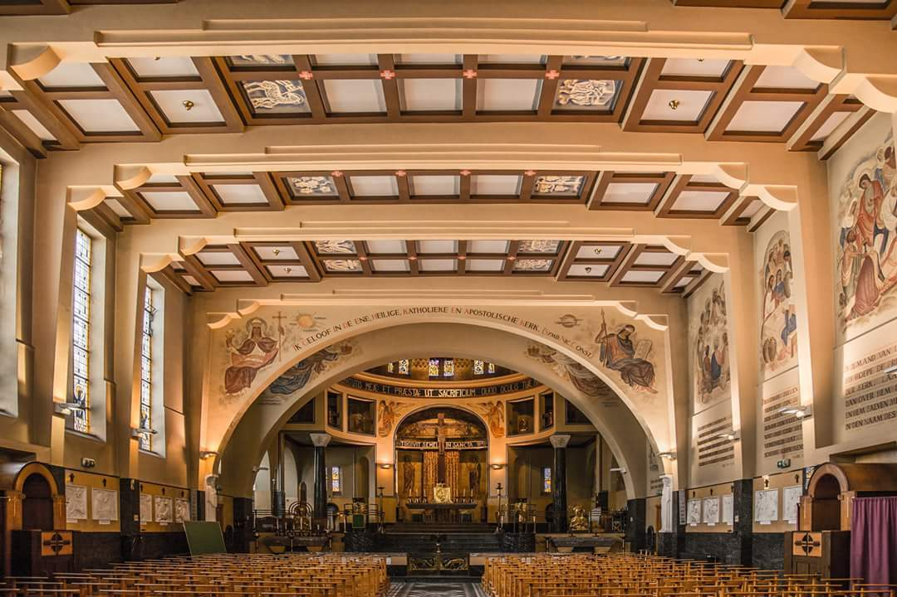
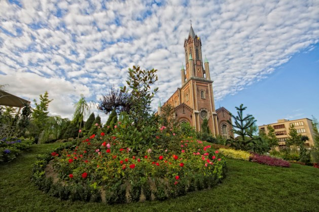

Wetteren werd voor het eerst vermeld in 980, als VUehtre.
36,68 km²
Het aantal inwoners in de gemeente Wetteren is met 4.821 inwoners gegroeid van 21.927 inwoners in 1990 tot 26.748 inwoners in 2023 (dat is een grote toename van 22%).
Wieps is een vervorming van wies, wijds. Met wijde stap is dus het onderliggende idee. In Wetteren is uiteindelijk de betekenis 'schuin' overgebleven."
Wetteren is de Naam van een Gemeente. Uit een onooglijk dorpje in 1469, waarin niet meer dan 500 inwoners de zanderige heuvels bewoonden, groeide de gemeente zoals we haar vandaag kennen, en die in 2017 haar 25.000ste èn 25.001ste inwoner verwelkomde.
Deze kapel is één van de meest opmerkelijke religieuze realisaties uit het interbellum.Art deco, vroegchristelijke en byzantijnse kunst vormen er een harmonieus geheel. Als je de toegangsdeur opent, word je overvallen door de veelkleurige mozaïeken, de schitterende glasramen en de muurschilderingen. De indrukwekkende koepel doet de kapel triomfalisme uitstralen. De Sint-Jozefkapel is L-vormig en gedeeltelijk geïntegreerd in het schoolgebouw. De architectuur en het interieur zijn een voorbeeld van de vernieuwing die er kwam als gevolg van de Liturgische Beweging in het tweede kwart van de 20ste eeuw. Het schoolgebouw waarbinnen de kapel geïntegreerd is toont de nieuwe tendensen binnen de architectuurstijlen uit het interbellum: lokale baksteenarchitectuur, dudokiaanse invloeden, aspecten van het modernisme vooral behorend tot het romantisch kubisme en de art deco. De kapel bestaat uit een rechthoekige beuk die eindigt op een koor op een hoger bouwniveau met ondiepe gebogen apsis.
De Sint-Gertrudiskerk is een kerkgebouw in de Belgische gemeente Wetteren. De kerk is toegewijd aan Gertrudis van Nijvel. De Sint-Gertrudiskerk is een kerkgebouw in de Belgische gemeente Wetteren. De kerk is toegewijd aan Gertrudis van Nijvel. De middeleeuwse kerk werd te klein in de 19e eeuw en onder impuls van burgemeester Charles Hippolyte Vilain XIIII (Katholieke Partij) besliste men omstreeks 1850 op dezelfde plaats een grotere kerk te bouwen, onder leiding van architect Louis Minard.